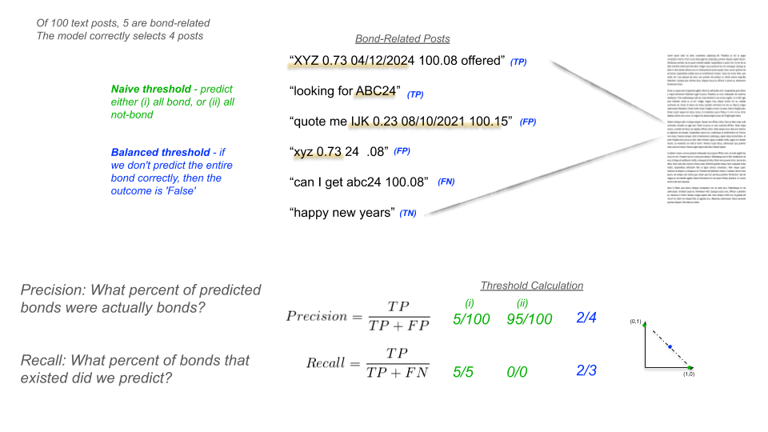
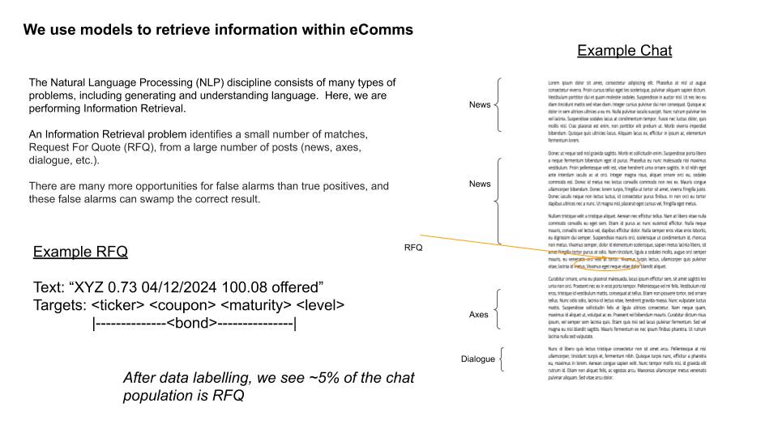
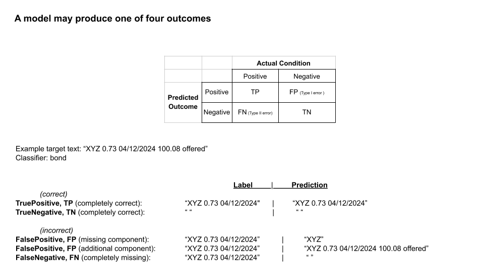
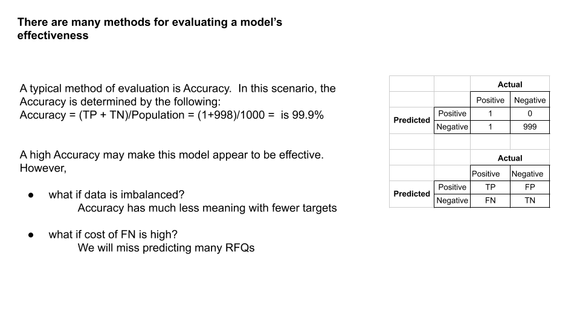
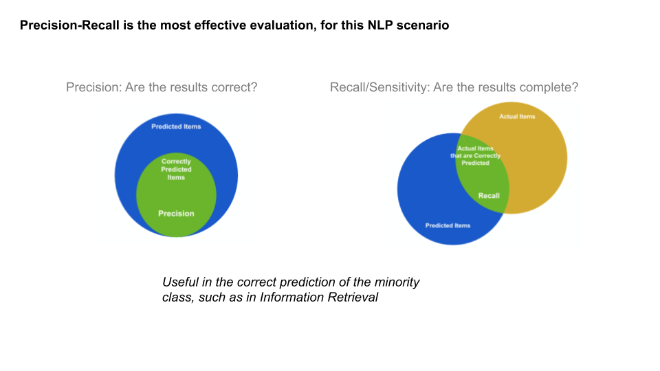
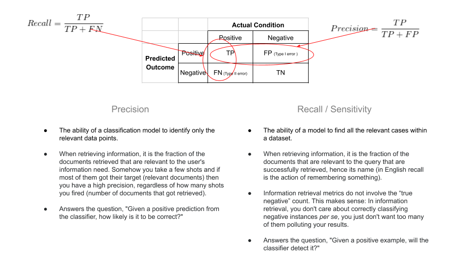
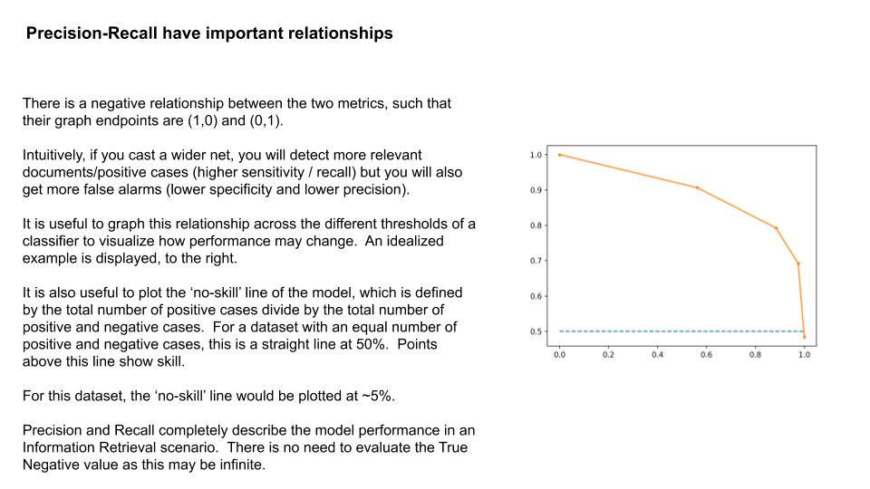
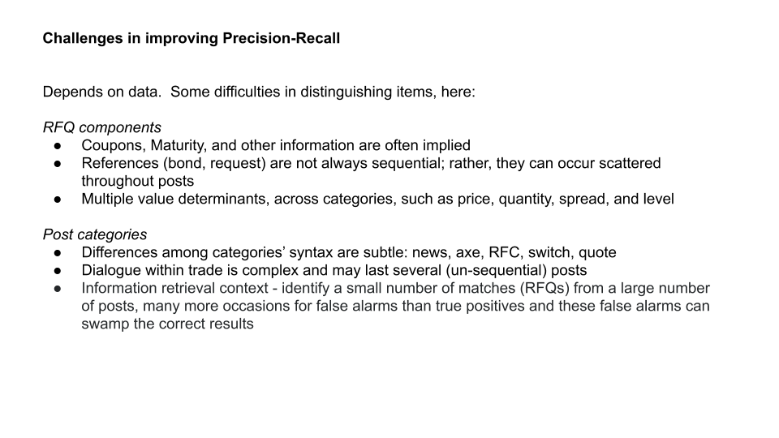

Stakeholders want to understand what you are selling and how your approach is different. However, the level of detail they want varies greatly among your different customers. A simple whitepaper can be useful enough, in most situations. But, occaisionally, a layman will want to know exactly what you are doing and will not be content until you very succinctly explain it to them. This post will explain two methods for approaching such obstacles.
Introduction
There are many types of customers and stakeholders that may be encoutered while selling analytics solutions. Most non-technical stakeholders do not have the time or inclination for the details of analytics. They may have a colleague or subject matter expert discuss your approach during initial interactions. However, some parties have a real desire to understand what you are doing. They may also see it as a test of your abilities that you can explain difficult concepts in a way that they can understand.
In any case, their time is limited. You will have to make your case clearly and succinctly; otherwise, they quickly lose patience and you lose your opportunity. Two typical failures occur with the too-technical and not-technical-enough approaches. Both of these outcomes are due to a lack of preparation.
In the too-technical case, the presenter loses perspective of the forest while getting lost in the trees. This is common when multi-tasking. Moments after implementing a difficult programming solution, a data scientist is asked to join a call with a customer. The scientist has little background on who it is they are engaging, and their mind is working at the same level of detail they were just programming - a recipe for disaster. The scientist gets muddeled in tangents, and the customer never gets a straight answer. It finally ends, long-overdue, with the customer frustrated and having little interest in future conversations.
The opposite happens when a seller is caught off-guard with some difficult questions. Despite the firm’s large investment educating the seller with strong fundamentals, the seller cannot be an expert. The customer asks some technical questions, incorrectly, or using strange jargon. Instead of deferring to an expert, the seller presses on, but cannot pary the customers’ inquiries. After some stammering, the customer feels they ferreted out an imposter. Getting their attention, again, will take time.
These are painful experiences to undergo. With preparation using the methods, below, the situation will occur much less frequently.
Methodologies
The methodologies are best presented using examples. There are many complicated subjects in the analytics field, but one of the most common is evaluating a solution. Is your solution a good one? Is it better than a competitor’s solution? Why is your method of evaluation correct? This is just a taste of the rapid-fire inquisition that will take place.
In this NLP scenario, you will need to explain what you are doing, and why it makes sense. The conclusion of the scenario is that an appropriate balance between precision and recall is necessary for a well-performing model.
It is important to remember that the customer is not your advesary. That may be difficult to believe. A good basic assumption is that the customer spends the majority of their day looking at powerpoint and has a strong belief that ‘100%’ within a green circle is the only correct answer to any question.
These methods can take considerable time to iterate on the presentation in order to reach the correct balance.
Golden phrase method
The purpose of finding the Golden Phrase is that it instantly makes abstract concepts transparent. There are two difficulties: discovering a good phrase, and ensuring it is universally accepted. Discovering a good phrase requires careful thought to create ideas and alot of repitiion trying them with customers. It is important not to anchor on your first phrases; instead, keep brainstorming and allow customers to tell you what is correct by reacting to your words. It can be very difficult to view the world from their perspective, and to believe you know better than them is the greatest folly.
After discovering some phrases where customers do have ‘Eureka’ moments, it is important to validate the phrases. Not only should the phrase be applicable to different customers within a shared market, it should be repeatable with the same customer. This is surprisingly difficult! In the provided scenario explaining Precision and Recall, a data scientist gave the phrase, ‘100% Precision ensures there are no False-Positives, 100% Recall ensures there are no Misses.’ The customer shouted with joy that he understood, completely. Alas, a week went by and the phrase was used, again, on the same customer. This time, the customer was dumbfounded and had lost confidence the team’s work. Sometimes, that is how it goes.
Example method
This straight-forward approach explains exactly what you are doing, and is made clear by performing each of the steps, sequentially, just as it is performed. The difficutly is that it is just one case, so it may not be the correct balance for some audiences. This is better used with executives that are content with a cursory understanding of a topic, and don’t ask too many questions.

Notice the layout is top to bottom, left to right, in essentially two rows. This is important for the sequential steps
The green text matches with the first case of naive threshold The blue text matches with the second case of balanced threshold black text is actual text gray text is supporting notes
Baby-steps method
Baby-steps are for audiences who really want to understand what you are doing, but have little to no technical background. While it is thorough, you skip the gory details. Baby-steps provide the essence of what is happening in as simple an explanation as possible - but not simpler.
We perform the process using the following steps:
- We use models to retrieve information within electronic communications
- A model may produce one of four outcomes
- There are many methods for evaluating a model’s effectiveness
- Precision-Recall is the most effective evaluation, for this NLP scenario
- Precision-Recall have important relationships
- Challenges in improving Precision-Recall







Drill-down method
This method can be really useful for providing the appropriate detail for many different audiences. It can be conceived of as an onion. Additional layers can be peeled-back for greater detail and understanding. The drawback is that it is very time-consuming to create, and also lengthy in presentation.
Aspects for Iterative Improvement
Some presentations are collected and used in case they are of value. But, others may be the key for clenching a deal. These important jewels need to be continuously polished, presented, and updated to ensure they are ready for the next deal.
- Is the color schema meaningful and distinctive?
- Does the diagramming tool provide reasonable way to perceive the idea?
- What audience is best-/least-suited for the presentation
- What supporting notes should we maintain to help explain
While using these presentations in practice and with customers, be sure to maintain key phrases that either you or the audience says. These are triggers that immediately create an ah-ha moment.